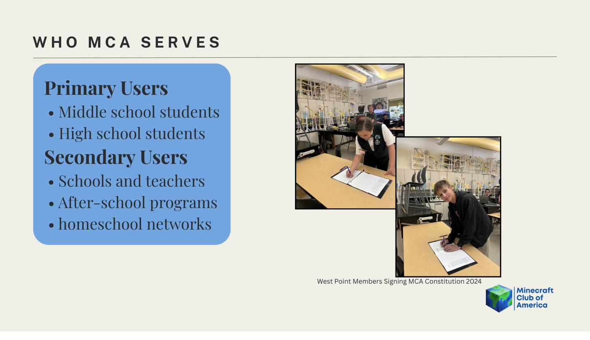

National Leadership
The MCA is entirely student-run. Every officer, representative, and justice is a student — elected or appointed through the constitutional processes established at our founding.
| William Rector | National President |
| Kyden Blake | National Vice President |
| Club Presidents (all chapters) | Council of Presidents |
The National President serves as Commander in Chief, enforces World Congress legislation, holds veto power (overridable by ⅔ vote), appoints World Court Justices with Congressional consent, and addresses the public four times per year.
| Samuel Olsen | Chief of Staff · Secretary of the Treasury |
| Pierce Poland | Secretary of Creative |
| Spencer Pike | Secretary of Communications |
| Cameron Loose | Lead Developer |
The Chief of Staff oversees all other departments and serves as the principal advisor to the National President. Each department must submit monthly reports and draft a Departmental Charter within 30 days of establishment.

| Lord Silky | Speaker, 2nd World Congress |
| Representatives | One per recognized nation (proportional to active population) |
The World Congress passes server-wide rules, regulates commerce between nations, declares war, levies taxes on in-game resources, and confirms all presidential appointments. A two-thirds vote overrides a presidential veto.
| Justices | One per nation — nominated by nations, appointed by the President with Congressional consent |
The World Court hears disputes between nations, server rule violations, constitutional interpretations, and impeachment proceedings. All members have the right to a fair trial, to present evidence, to representation by another player, and to appeal. Any player placed on Administrative Hold must receive a hearing within 72 hours.
Checks & Balances
- →Presidential vetoes may be overridden by a two-thirds vote of the World Congress.
- →The World Court may declare World Congress legislation unconstitutional.
- →World Court Justices may be impeached by the World Congress for misconduct.
- →Emergency powers require a three-fourths Congressional vote and expire after one month.
- →The World Congress publishes all proceedings publicly for member review.